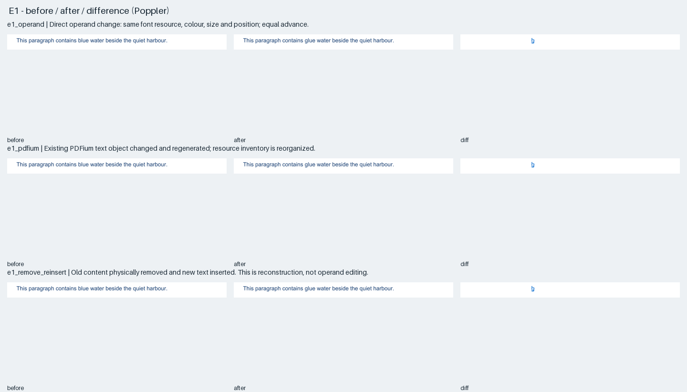
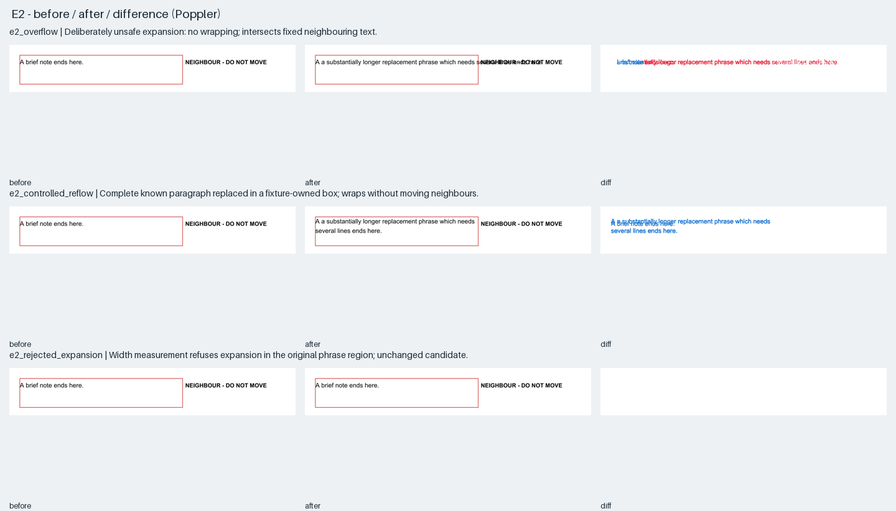
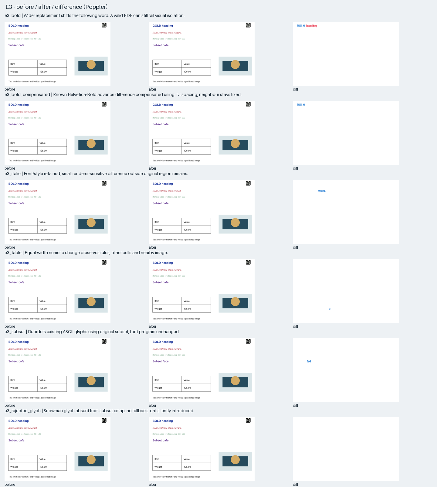
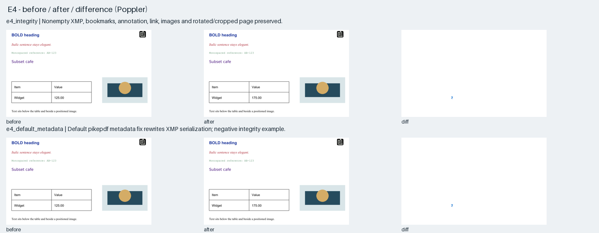
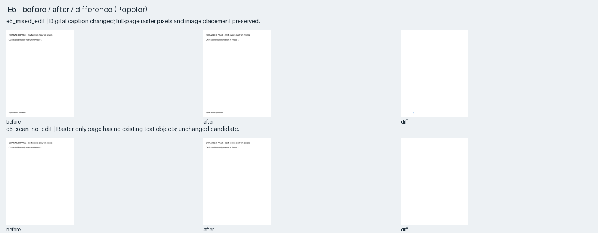

Local static review only. Candidate files include deliberately unsafe and refused operations. Red pixels mark changes outside the intended edit region. See the technical report before interpreting results.
| Experiment | Files | Outside pixels: MuPDF / PDFium / Poppler | Finding | 144 DPI renders |
|---|---|---|---|---|
| e1_operand | original PDF · candidate PDF · metrics · diagnostics | 0 / 0 / 0 | Direct operand change: same font resource, colour, size and position; equal advance. | before / after / diff |
| e1_pdfium | original PDF · candidate PDF · metrics · diagnostics | 0 / 0 / 0 | Existing PDFium text object changed and regenerated; resource inventory is reorganized. | before / after / diff |
| e1_remove_reinsert | original PDF · candidate PDF · metrics · diagnostics | 0 / 0 / 0 | Old content physically removed and new text inserted. This is reconstruction, not operand editing. | before / after / diff |
| e2_overflow | original PDF · candidate PDF · metrics · diagnostics | 5356 / 5829 / 5350 | Deliberately unsafe expansion: no wrapping; intersects fixed neighbouring text. | before / after / diff |
| e2_controlled_reflow | original PDF · candidate PDF · metrics · diagnostics | 0 / 0 / 0 | Complete known paragraph replaced in a fixture-owned box; wraps without moving neighbours. | before / after / diff |
| e3_bold | original PDF · candidate PDF · metrics · diagnostics | 1204 / 1474 / 1222 | Wider replacement shifts the following word. A valid PDF can still fail visual isolation. | before / after / diff |
| e3_bold_compensated | original PDF · candidate PDF · metrics · diagnostics | 0 / 0 / 0 | Known Helvetica-Bold advance difference compensated using TJ spacing; neighbour stays fixed. | before / after / diff |
| e3_italic | original PDF · candidate PDF · metrics · diagnostics | 0 / 1 / 0 | Font/style retained; small renderer-sensitive difference outside original region remains. | before / after / diff |
| e3_table | original PDF · candidate PDF · metrics · diagnostics | 0 / 0 / 0 | Equal-width numeric change preserves rules, other cells and nearby image. | before / after / diff |
| e3_subset | original PDF · candidate PDF · metrics · diagnostics | 0 / 0 / 0 | Reorders existing ASCII glyphs using original subset; font program unchanged. | before / after / diff |
| e4_integrity | original PDF · candidate PDF · metrics · diagnostics | 0 / 0 / 0 | Nonempty XMP, bookmarks, annotation, link, images and rotated/cropped page preserved. | before / after / diff |
| e4_default_metadata | original PDF · candidate PDF · metrics · diagnostics | 0 / 0 / 0 | Default pikepdf metadata fix rewrites XMP serialization; negative integrity example. | before / after / diff |
| e5_mixed_edit | original PDF · candidate PDF · metrics · diagnostics | 0 / 0 / 0 | Digital caption changed; full-page raster pixels and image placement preserved. | before / after / diff |
| e2_rejected_expansion | original PDF · candidate PDF · metrics · diagnostics | 0 / 0 / 0 | Width measurement refuses expansion in the original phrase region; unchanged candidate. | before / after / diff |
| e3_rejected_glyph | original PDF · candidate PDF · metrics · diagnostics | 0 / 0 / 0 | Snowman glyph absent from subset cmap; no fallback font silently introduced. | before / after / diff |
| e5_scan_no_edit | original PDF · candidate PDF · metrics · diagnostics | 0 / 0 / 0 | Raster-only page has no existing text objects; unchanged candidate. | before / after / diff |
 | ||||
 | ||||
 | ||||
 | ||||
 | ||||